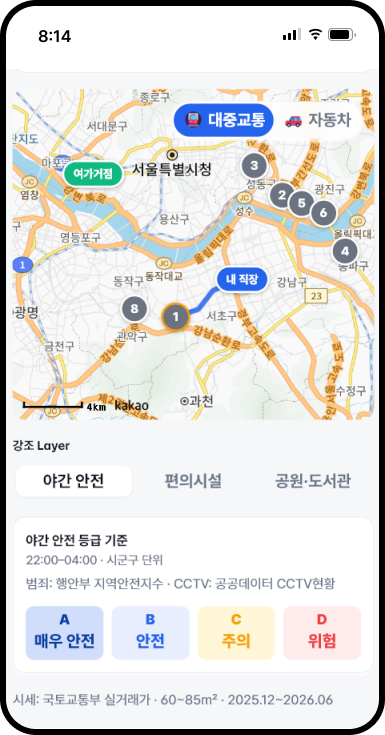
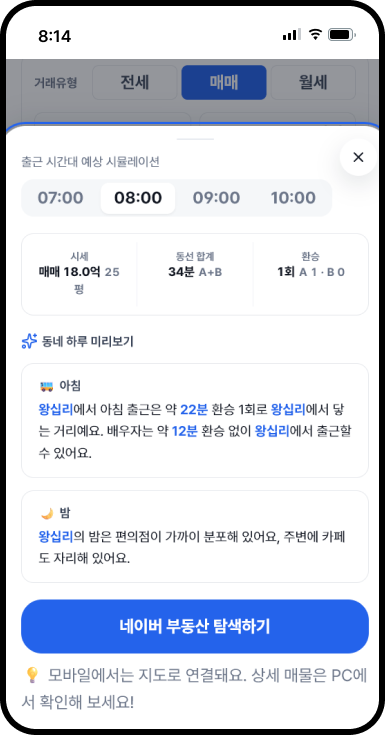
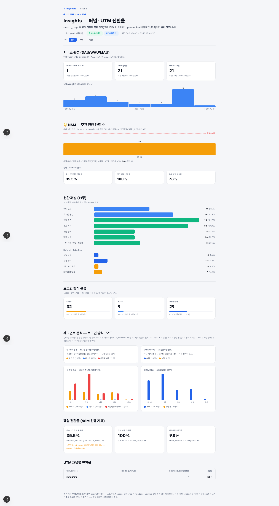
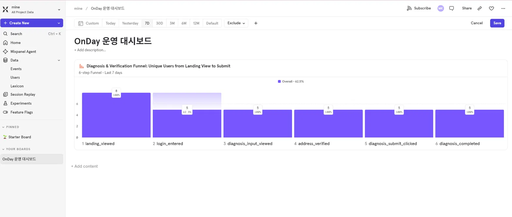

1. 프로젝트 개요
- 기간: 2026.03 ~ 2026.06
- 주관: 모두의연구소 (Product Planning & Development with Vibe Coding 과정)
- 역할: 프로덕트 매니저(PM) — 1인 기획 및 개발 프로토타이핑
- MVP 프로토타이핑: Vibe Coding(AI 프롬프트 활용)을 통해 기획안(PRD)을 실제 동작하는 MVP 웹 서비스로 신속하게 구현하고, E2E·단위 테스트로 핵심 시나리오 동작을 검증
주요 업무 및 성과
- PRD/SRS 산출물 작성 및 정책 수립: AS-IS 분석, 유저 스토리 도출, 데이터 추적 지표(KPI) 설계
- 프론트엔드 및 반응형 마크업 설계: Vibe Coding(AI 프롬프트)을 활용한 신속한 MVP 구현 및 UI/UX 설계
- 데이터 기반 가설 검증 세팅: A/B 테스트 시나리오(EXP-1~4) 설계 및 WTP(지불 의향) 설문 응답률 측정 지표 수립
※ 현재 MVP 구현·배포까지 완료했으며, 핵심 지표는 7일 소규모 베타로 1차 실측(방향성 확인)했습니다(상세 §7). 정성 피드백은 베타 경험 설문(n=9)으로 확보했고, 심층 UT와 A/B 실험(EXP-1~4)은 설계·예정 단계로 대규모 A/B 실측은 오픈 베타에서 진행 예정입니다.
2. 배경 및 문제 정의
기존 대형 프롭테크 플랫폼은 가격·평수 등 정량적 매물 데이터에 집중되어 있어, 실제 사용자의 라이프스타일과 체감 데이터(통근 피로도, 치안 등)를 반영하지 못하는 한계가 있었습니다.
- 탐색 비용의 낭비: 여러 앱을 오가며 수작업 탐색에 평균 4.2개월, 오프라인 임장 평균 12회 (JTBD 인터뷰 14명 기반)
- 부부 합의의 어려움: 서로의 직장 동선을 동시에 만족하는 곳을 찾기 힘들어 1차 합의 실패율 70% (합의 어려움은 14명 중 12명이 언급)
- 심리적 고립감: 1인 가구·이직자는 낯선 지역을 혼자 결정해야 하는 불안감이 큼
타겟 세그먼트 우선순위
인터뷰 14건 → 페르소나 10명 → 핵심 세그먼트 5개
- C-01 맞벌이 부부 (AOS 4.00 / WTP 3~5만원) — 1순위, '두 동선 교차'의 핵심 타겟
- C-03 긴급 이사 (AOS 3.80 / WTP 10만원) — 최고 WTP, 데드라인 모드로 정조준
- C-02 맹모 · C-04 반복이사 · A-01 1인가구 — 싱글/데드라인 모드로 확장 대응
3. 프로젝트 목표 및 핵심 타겟 지표
수작업 탐색 시간을 단축하고 의사결정의 마찰을 줄여, 사용자가 원하는 동네를 빠르고 확신 있게 선택하도록 돕습니다.
| 지표 | AS-IS | 목표 (TO-BE) | 측정 방법 |
|---|---|---|---|
| 북극성 지표 (North Star) | — | 50건/주(클로즈드 베타·3개월) → 200건/주(오픈 베타·6개월) | 진단 완료 이벤트 집계 |
| 탐색 시간 단축 | 수작업 2~3시간 | 10분 이내 | 세션 소요 시간 |
| 후보 동네 압축 | 24곳 수동 비교 | 상위 후보 자동 추천 | 매칭 점수·통근·시세 3개 기준 정렬 제공 |
| 오프라인 임장 절감 | 평균 12회/건 | 3회/건 | 진단 완료 D+30 후속 설문 |
| 의사결정 기간 단축 | 평균 4.2개월 | 2주 이내 합의 | 공유 링크 생성→진단 완료 일수 Proxy |
| 보조 지표 | — | WTP 응답률 30%+ · 공유 링크 클릭률 40%+ | 설문/클릭 이벤트 |
4. 핵심 기능 및 기획 의도





5. PM 관점의 문제 해결 과정
한정된 리소스 속 MVP 스코프 정의
S 1인 개발 특성상 기획한 모든 기능을 초기 출시에 포함할 수 없는 제약이 있었습니다.
A MoSCoW 방법론을 적용하여 필수 기능(Must)에 집중했습니다. 알고리즘 복잡도가 높은 '복수 목적지 모드(3개 이상)'나 유지보수 공수가 큰 '행정동 변경 감지' 등은 v1.5 이후로 과감히 연기(Out-of-Scope)하여, 초기 시장 검증(PMF)과 핵심 가치 전달에 리소스를 집중했습니다. 특히 '학원 셔틀 종점 DB'는 사용자 니즈 점수(AOS 4.00)가 전체 최고였으나, 구현 실현 가치(DOS 1.60)가 낮아 — 가장 원하는 기능임에도 과감히 Won't로 분류했습니다.
R 우선순위를 '욕구'가 아닌 '욕구 × 실현가능성'으로 판단한 사례입니다.
외부 연동 환경 제약 극복
S 네이버 부동산 매물 연결이 PC에서는 정상 동작했으나, 모바일에서는 외부 링크 연동이 제한되는 한계를 발견했습니다.
A '모든 환경 동일 기능' 대신 환경별 최적 경험을 우선했습니다. 모바일은 매물 직접 연결 대신 지도 기반 탐색으로 대체해, 외부 의존성 한계 안에서 끊김 없는 탐색을 분기 설계했습니다.
R 진단 결과·싱글·데드라인 3개 화면에 PC(네이버 부동산 매물 바로가기)/모바일(동네명 기반 네이버 지도 탐색) 분기를 적용해 배포했습니다. 모바일에는 '상세 매물은 PC에서 확인' 안내 문구를 함께 노출해 동작 차이를 사용자에게 투명하게 알렸습니다.
데이터 기반 가설 검증 설계
S 정식 유료화 전, 사용자의 지불 의향(WTP)과 공유 기능의 바이럴 효과를 확인해야 했습니다.
A 무료 미리보기 제공 범위를 '1곳 vs 3곳'으로 나누고, '데이터 출처 배지 유무'에 따른 NPS(순추천지수) 차이를 측정하는 등 4가지 A/B 테스트(EXP-1~4)를 꼼꼼히 설계하여 오픈 베타 기간의 데이터 수집 계획을 세웠습니다.
R 4개 실험의 가설·판정 기준·표본 크기(검정력 0.80 기준 그룹당 110명 권장)까지 PRD rev.4에 확정 문서화했습니다. (실측은 오픈 베타 예정)
수익 모델 의사결정 — ADR로 기록
S 1회성 결제 / 월정액 구독 / 하이브리드 세 가지 과금 모델 중 선택이 필요했습니다.
A SOM 시뮬레이션으로 연 매출을 비교했습니다 — 1회성 약 300만 원 < 하이브리드 약 1,680만 원 < 순수 구독 약 2,682만 원. 수치상 최고는 구독이었으나, '이사와 무관한 기간의 이탈률'이 높아 현실성이 낮다고 판단해 하이브리드(첫 진단 3만 원 + 월 1만 원)를 유력안으로 도출했습니다(실측 후 확정).
R 가장 큰 숫자가 아닌 '지속 가능한 숫자'를 선택하고, 그 트레이드오프 근거를 ADR(아키텍처 의사결정 기록)로 남겨 이후 EXP-3에서 가격 탄력성을 실측해 재검토하도록 설계했습니다.
AI 생성 콘텐츠의 신뢰 관리
S 동네 미리보기를 LLM으로 생성하면 존재하지 않는 시설이나 잘못된 정보를 사실처럼 말하는 환각(Hallucination) 리스크가 있었고, 호출이 반복되면 API 비용·응답 지연도 누적되는 구조였습니다.
A 진단 결과에 포함된 실제 데이터(통근 시간·치안 등급·편의시설 수)만 입력으로 제공하고 그 범위 밖 정보 생성을 금지하는 프롬프트 제약 + 추정성 표현에 '추정' 라벨을 표기하여 정직성을 잃지 않았습니다. 또한 동일 동네 재조회 시 세션 캐싱으로 중복 호출을 차단해 비용과 지연을 관리했습니다.
R AI 기능의 가치는 생성 품질이 아니라 신뢰 설계에서 갈린다는 것 — 데이터 출처 배지와 같은 원칙(투명성)을 AI 출력에도 동일하게 적용했습니다.
주요 아키텍처 의사결정 기록 (ADR)
| ADR | 결정 | 핵심 근거 |
|---|---|---|
| ADR-001 | 교통 API = 카카오 모빌리티 1차 | 무료 50만건/일, 환승·도보 포함. 네이버 백업 |
| ADR-002 | 하이브리드(잠정) · EXP-3 실측 후 확정 | SOM 시뮬레이션 (구독이 최고지만 이탈률로 하이브리드) |
| ADR-003 | MVP 수도권 한정 | 비수도권 정확도 ≤60%(추정) → 품질 > 커버리지 |
5-1. 기획 대비 구현 변경
PRD는 출발점이지 정답지가 아닙니다. 구현 과정에서 스펙과 제품 사이에 생긴 차이를 추적하고, 각 변경의 사유를 기록했습니다.
| 항목 | PRD 기준 | 실제 구현 | 변경 사유 |
|---|---|---|---|
| 후보 동네 수 | 3곳 이하로 압축 추천 | 8곳 + 정렬 탭(매칭점수·통근·시세) | 사용자 신뢰가 형성되기 전 단계에서 3곳 강제 압축은 "왜 이 3곳인가"라는 의심을 낳아, 비교 기준 선택권을 제공하는 방향으로 전환 |
| 스코어링 표현 | 스코어 산출(내부 로직) | 매칭 점수 100점 만점 UI로 전면 노출 | 두 사람의 서로 다른 조건을 종합한 결과를 한눈에 비교하려면 단일 지표가 필요. 내부 점수를 숨기면 추천 근거가 블랙박스가 되므로 점수를 전면 노출해 설명 가능성 확보 — 출처 배지와 동일한 투명성 원칙의 연장 |
| 시세 정보 | 실거래가 데이터 제공 | 거래 유형 토글(전세/매매/월세) + 동네별 시세 | 이사 의사결정에서 예산은 통근만큼 강한 제약인데 사용자마다 거래 유형이 달라 단일 시세는 비교 기준이 못 됨. 본인 상황 기준 비교 제공, 데이터 부족 유형은 '추정' 라벨로 표기 |
| 의사결정 보조 | PRD에 없음 | '통근 스트레스'(환승 피로도 + 출근길 혼잡도) 지표 신설 | 부부 합의 실패(70%)의 본질은 "둘 다 100점인 동네는 없다". 차순위가 무엇을 얻고 잃는지 명시해 합의 대화를 돕고, 소요 시간만으로 안 보이는 체감 피로를 분리 표기 |
| 싱글 모드 레이어 | 야간 치안·편의시설·카페 밀집도 | 강조 레이어 3종(야간 안전/편의시설/공원·도서관) | 카페 밀집도는 검증 가능한 공공데이터가 없어 출처 배지 원칙을 지킬 수 없었음. 공공데이터포털로 확보 가능한 공원·도서관 레이어로 교체해 데이터 신뢰 원칙 유지 |
| 급매 매물 제공 | 직접 필터링 | 네이버 부동산 아웃링크로 조건 위임 | 크롤링 법적 리스크(R2) 대응 — SRS REQ-FUNC-016에 반영된 결정 |
※ §7 측정은 경험 설문·이벤트 로그 기반으로 수행했으며, WTP 결제·설문 모달은 미구현(오픈 베타 예정)입니다. 위 변경·연기 내역은 다음 PRD 개정(rev.5)에 반영할 예정입니다.
6. 출시 및 롤아웃 계획
- 베타 경험 설문(n=9) 1차 완료 + 심층 UT 확대 예정: 이사 경험이 있는 3040 맞벌이 부부·1인 가구를 대상으로 7일 베타에서 경험 설문(n=9)으로 1차 정성 피드백을 확보했으며(상세 §7-4), 추가 심층 UT로 표본을 확대할 예정입니다.
- 피드백 기반 v1.5 고도화 기획: 우선순위를 미뤄둔 '행정동 변경 감지 기능'과 '학군/학원가 히트맵 레이어' 등을 보완하여, 수도권 외 지역으로 커버리지를 확장하기 위한 정책 명세서를 고도화할 예정
7. 측정 · 검증
최근 주 · 3개월 목표 50건의 56%
distinct 8명 중 5명 (랜딩→완료)
n=7 · 전체 9명 기준 4.11
유효 8명 / 결과 확인자 6명 기준
7-1. 측정 인프라 직접 구축
분석을 외부 도구에 의존하지 않고, event_logs 기반의 자체 운영 대시보드(Playboard Insights)를 직접 설계·구현했습니다. 이벤트 수집부터 퍼널·NSM·세그먼트 집계까지 한 화면에서 확인할 수 있으며, 보조적으로 Mixpanel(고유 사용자 기준 퍼널·리텐션), GA4(표준 분석), Sentry(에러 모니터링)를 함께 연동했습니다.

7-2. 지표 체계 — North Star & 선행지표
북극성 지표(NSM)는 주간 진단 완료 수(diagnosis_completed)로 정의했습니다. 7일 베타 기간 최근 주 기준 28건 / 3개월 목표 50건(목표의 56%)을 기록했습니다 (클로즈드 3개월 목표; 오픈 6개월 목표는 200건/주).
NSM을 끌어올리는 선행지표로 다음을 함께 추적했습니다(모두 이벤트 단위 집계로, 고유 사용자 기준으로 정규화되지 않았으며 내부 테스트 세션이 일부 포함될 수 있습니다):
- 주소 2건 입력 완료율 35.5% — 입력 구간에 마찰이 남아 있음을 시사
- 진단 제출 성공률 100% (이벤트 기준·내부 세션 일부 포함; 제출을 시작한 이벤트는 모두 성공)
- 공유 링크 생성률 9.8%
7-3. 전환 퍼널 분석 — 이탈 지점의 발견
고유 사용자 기준 6단계 전환 퍼널(Mixpanel)에서 랜딩 → 진단 완료 전체 전환율은 62.5%(8명 중 5명)였습니다. 단계별로 보면 가장 큰 이탈은 2단계(로그인 진입)에서 관측되었고(8명 → 5명), 로그인을 통과한 5명은 입력·검증·제출을 거쳐 진단 완료까지 모두 도달했습니다. 표본은 작지만(distinct 5명), 핵심 진단 경험에 진입한 사용자는 이탈 없이 완주했다는 방향성을 보여줍니다.

주: 본 퍼널은 Mixpanel 고유 사용자(distinct) 기준입니다. 7-2의 선행지표(35.5%·100%·9.8%)는 자체 대시보드의 이벤트 단위 집계로, 산출 방식이 달라 직접 비교 대상이 아닙니다. 두 기준의 통합 정규화는 후속 과제로 남겨두었습니다.
7-4. PMF 신호 점검 (기준선 근접·미달) — 삼각측량 (행동 · 태도 · 정성)
단일 지표가 아니라 행동 데이터(로그) · 태도 데이터(설문) · 정성 피드백(자유응답) 세 축을 교차 검증했습니다.
- 행동 (로그): 고유 사용자 기준 전환율 62.5%, 로그인을 통과한 사용자는 진단 완료까지 전원 도달, 최근 주 NSM 28건. 진입 이후의 핵심 경험은 이탈 없이 작동했습니다.
- 태도 (설문, n=9): 진단 과정 용이성 평균 4.67/5. 결과 만족도는 추천 결과를 실제로 확인한 7명 기준 4.00/5(전체 9명 기준 4.11)로, 사용성 대비 결과 만족도가 한 단계 낮았습니다.
- PMF 신호 (Sean Ellis 테스트): "더 이상 사용할 수 없다면?"에 "매우 실망" 37.5%(유효 응답 8명 중 3명). 결과를 실제로 확인한 사용자만 기준으로 하면 33.3%(6명 중 2명)로, 어느 기준에서든 PMF 기준선(40%)에 근접한 임계 수준입니다.
- 정성 (자유응답): 결과 만족도 최저점(3점)을 매긴 3명이 전원 매물·예산 연결 부재를 지목했습니다("매물 추천까지 이뤄진다면", "예산에 맞는 지역이 없음", "가격 갭이 큼").
세 축이 모순 없이 같은 결론을 가리켰습니다: 진입 이후의 핵심 경험은 작동하고 사용자가 아쉬워할 만큼의 가치를 느끼지만, 다음 과제는 ① 로그인 진입 마찰 해소와 ② 매물/예산 연결입니다.
7-5. 데이터가 결정한 다음 우선순위
검증 결과는 로드맵을 데이터로 재정렬하는 근거가 되었습니다.
- 매물·예산 연결 — 결과 만족도 갭의 단일 원인 (정성 피드백 수렴 지점)
- 로그인 진입 마찰 완화 — 퍼널에서 가장 큰 이탈이 관측된 단계 (8명 → 5명)
- 공유 행동 유도 — 설문상 공유 경험·의향은 89%(공유함 3 + 예정 5)에 달했으나, 실제 공유 링크 생성률은 9.8%에 그쳤습니다. 의향과 행동 사이의 큰 갭은 공유 UX 자체에 개선 여지가 있음을 보여줍니다.
가설로 세웠던 우선순위가 아니라 실사용자의 행동과 목소리가 가리킨 순서입니다.
- 표본: 7일간 소규모 베타(설문 n=9, 퍼널 distinct 5~8명)로, 통계적 유의성 확보가 아닌 방향성 확인(directional)을 목적으로 합니다.
- 내부 트래픽: 행동 지표(NSM·퍼널·선행지표)에는 개발·테스트 과정의 내부 세션이 일부 포함되어 있어, 순수 외부 사용자 기준 지표와 차이가 있을 수 있습니다.
- 집계 기준: 이벤트 단위 집계(제출 성공률 100% 등)는 고유 사용자 기준으로 정규화되지 않은 값이며, '완료' 정의가 소스별로 다릅니다(Mixpanel distinct 5 · 자체 주간 NSM 28 · 제출 이벤트 36). 통합 정규화는 후속 과제입니다.
- 검증 가능성: 본 문서의 대시보드·Mixpanel 수치는 운영 대시보드 화면 캡처를 증거로 첨부합니다.
8. 회고
"스코프를 지키는 것이 아니라, 스코프를 다시 정하는 것이 1인 PM의 일이라는 걸 배운 프로젝트."
잘한 점
- 기획 문서를 한 번 쓰고 끝내지 않고, 구현 현실에 맞춰 PRD rev.4 / SRS rev.1.7까지 개정하며 문서와 제품의 정합성을 끝까지 관리함. 결제 제외, 저장 기능 축소 같은 "뺀 결정"도 사유와 함께 기록으로 남김.
- 사용자가 가장 원하는 기능(학원 셔틀 DB, AOS 4.00 전체 최고)을 실현 가능성(DOS 1.60) 기준으로 잘라냄. 우선순위를 '욕구'가 아닌 '욕구 × 실현 가능성'으로 판단하는 기준을 세움.
- 측정을 설계에 멈추지 않고, 7일 베타로 실사용 데이터(설문 n=9·자체 운영 대시보드)를 수집해 가설을 검증 단계로 전환함. 행동·태도·정성 세 축의 삼각측량으로 다음 과제를 데이터로 도출함.
아쉬운 점 & 다음에 다르게 할 것
- 초기 스코프를 1인 리소스 대비 크게 잡아, rev.3~4에 걸쳐 두 차례 축소를 거침. "혼자서 12주"라는 제약을 처음부터 스코프 산정에 반영했어야 했음.
- 검증은 시작했으나 표본이 작아(설문 n=9·퍼널 distinct 5~8명) 아직 통계적 유의성이 아닌 방향성 확인 수준임. 다음 과제는 표본 확대와 내부 트래픽을 분리한 순수 외부 사용자 기준 재측정임.
- 스코프 산정을 "이상적 범위"가 아닌 "리소스 역산 범위"에서 시작하고, 축소를 예외가 아닌 기본 절차로 계획에 포함할 것.
- 기획-구현 사이 차이(Spec Delta)를 사후 발견이 아니라 스프린트마다 점검하는 정기 절차로 만들 것.